Live health checks run every 30 minutes via GitHub Actions.
Every day, ephemeral EKS and GKE clusters are spun up, validated end-to-end, and torn down.
Live UIs are available when the management cluster is running. Screenshots shown as fallback.
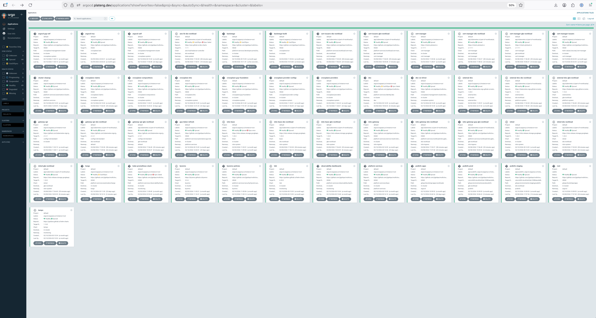
GitOps continuous delivery. App-of-apps pattern managing 30+ applications across clusters.
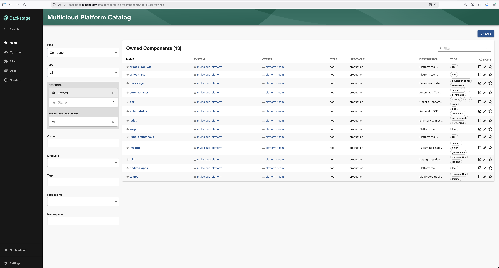
Developer portal with software catalog, cluster creation templates, and TechDocs.
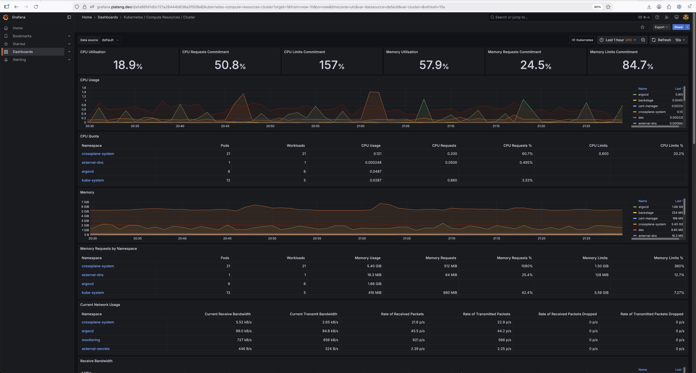
Full LGTM observability stack — Prometheus metrics, Loki logs, Tempo traces.
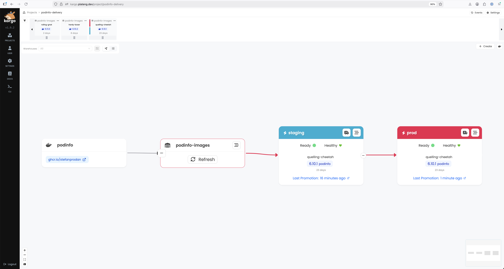
GitOps-native progressive delivery. Promotion pipelines from staging to production.
Developers provision EKS or GKE clusters through a Backstage template. The template generates Crossplane claims, opens a GitHub PR, and once merged, ArgoCD + Crossplane provision the cluster automatically.
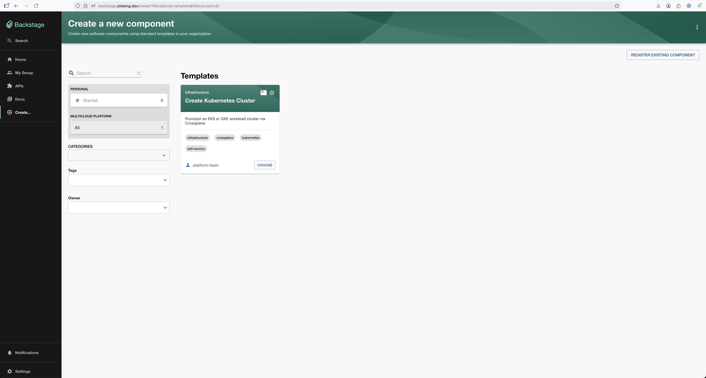
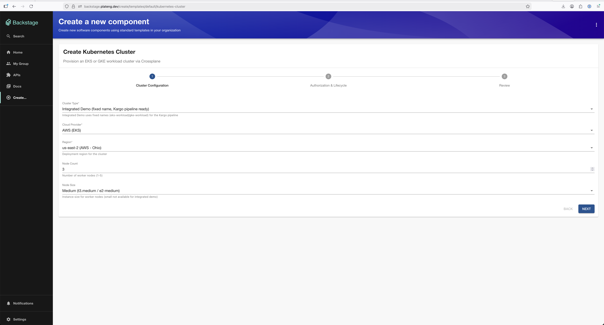
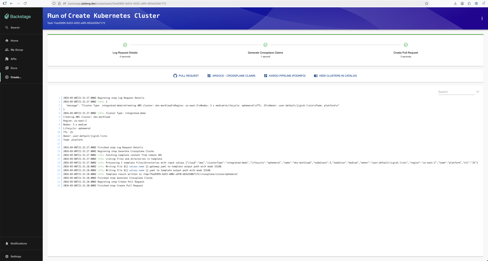
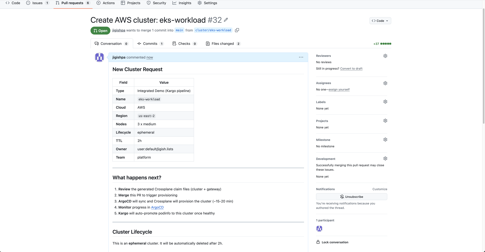
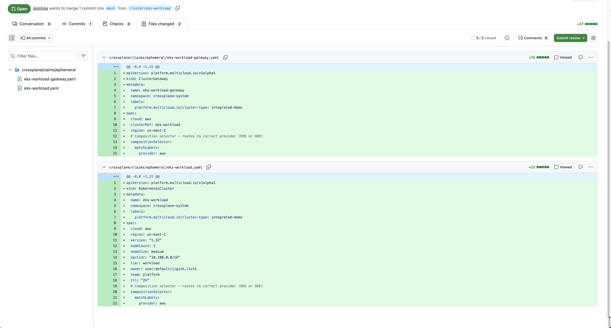
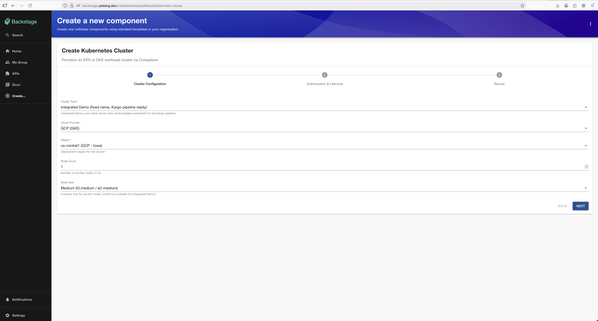
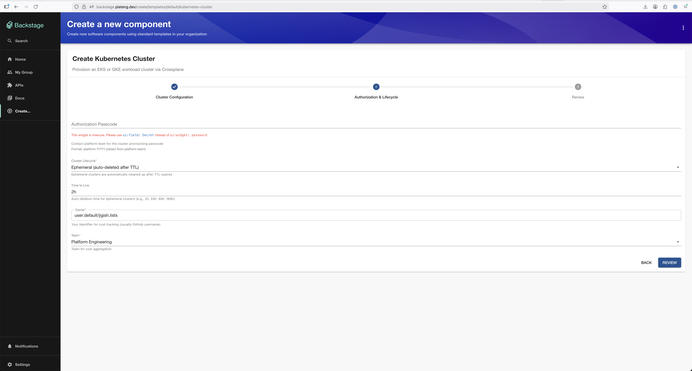
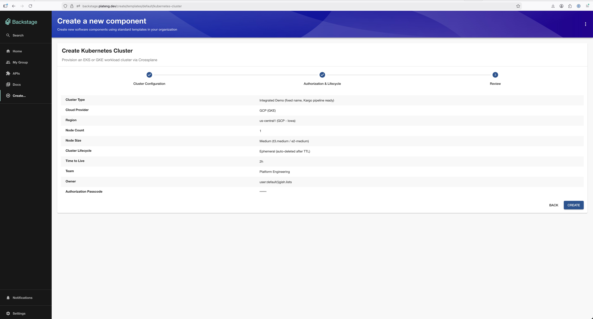
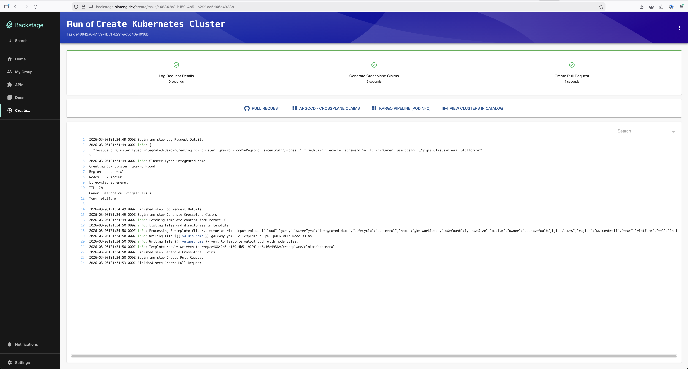
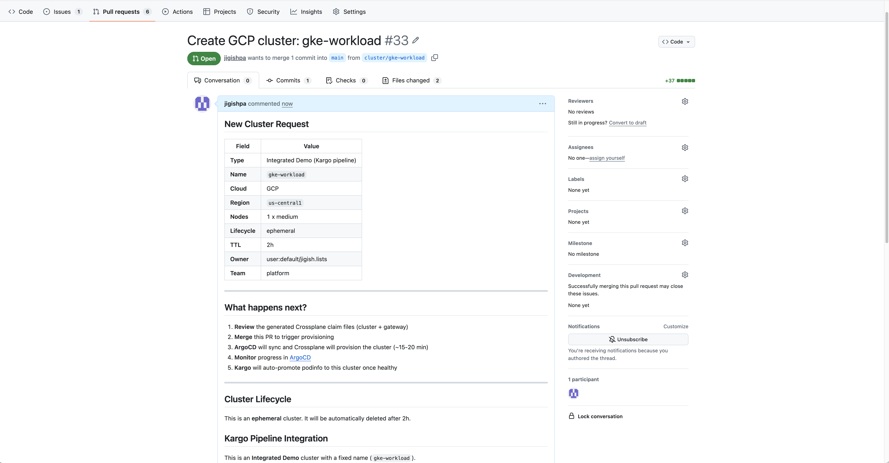
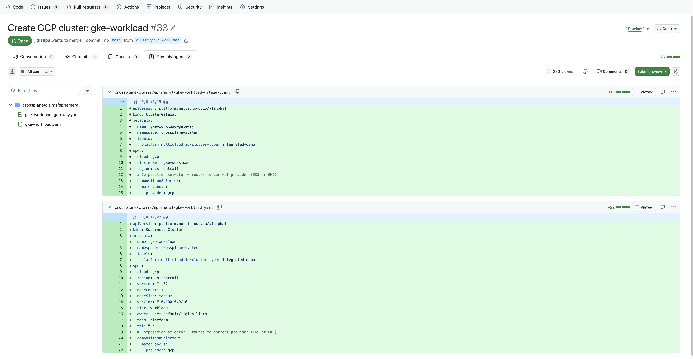
A single EKS management cluster provisions and manages workload clusters on both AWS and GCP.
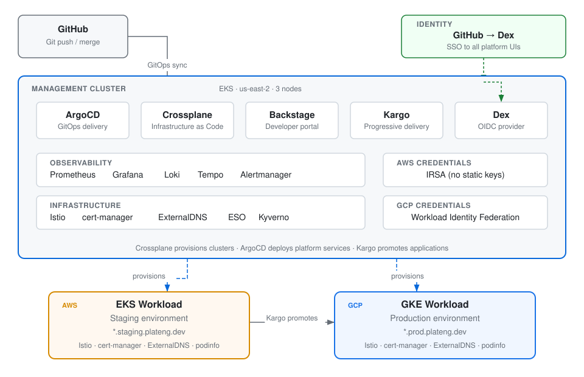
IRSA for AWS, Workload Identity Federation for GCP. No long-lived secrets anywhere.
All changes flow through Git. ArgoCD reconciles desired state automatically.
Same claim API provisions EKS or GKE. Crossplane compositions abstract cloud differences.
Full LGTM stack: Prometheus, Grafana, Loki, Tempo. Dashboards and alerts from day one.
Kyverno policies, Pod Security Standards, automated TLS, SSO across all tools.
Pure Crossplane — no Terraform, no ClickOps. Every resource is a Kubernetes manifest.
Every line of code, every kubectl command, every debugging session — done through Claude Code across 100+ paired sessions. Zero lines written manually.
The platform bootstraps itself through three tiers, progressively upgrading from static credentials to fully keyless authentication.
Kind cluster on a laptop. Crossplane + AWS provider with temporary secret-based credentials. Creates the management cluster, then is deleted.
Self-managing EKS cluster. Crossplane with IRSA (AWS) and Workload Identity Federation (GCP) — zero static credentials. Runs ArgoCD, Backstage, Kargo, and the full observability stack.
Ephemeral clusters provisioned on-demand via Backstage templates. Platform services (Istio, cert-manager, ExternalDNS) auto-deployed by ArgoCD. Kargo promotes applications through staging to production.
| Category | Technology | Why This Choice |
|---|---|---|
| Infrastructure as Code | Crossplane | Kubernetes-native, GitOps-friendly (not Terraform) |
| GitOps | ArgoCD | App-of-apps, multi-cluster, health checks |
| Progressive Delivery | Kargo | GitOps-native promotions (not Argo Rollouts) |
| Developer Portal | Backstage | CNCF standard, software templates, TechDocs |
| Identity / SSO | Dex + GitHub | Unified SSO across all UIs, pluggable IdP |
| Observability | Prometheus + Grafana + Loki + Tempo | Full LGTM stack, industry standard |
| Service Mesh | Istio + Gateway API | L7 traffic management, mTLS |
| Policy | Kyverno | Kubernetes-native, mutation + validation |
| Secrets | ESO + AWS Secrets Manager | No secrets in Git, auto-rotation |
| TLS | cert-manager + Let's Encrypt | Automated certificate lifecycle |
| DNS | ExternalDNS | Automated DNS from Kubernetes resources |
Built iteratively across 10 phases, each expanding the platform's capabilities.
| Capability | Platform Feature | Industry Practice |
|---|---|---|
| Multi-cloud provisioning | Crossplane compositions (EKS + GKE) | Cloud-agnostic control plane |
| GitOps delivery | ArgoCD app-of-apps + ApplicationSets | CNCF GitOps principles |
| Progressive delivery | Kargo promotion pipelines | Environment promotion gates |
| Self-service infrastructure | Backstage software templates | Internal Developer Platform |
| Ephemeral environments | TTL-based clusters with CronJob cleanup | On-demand dev/test environments |
| Zero-trust identity | IRSA + Workload Identity Federation | Keyless workload authentication |
| Unified observability | Prometheus, Grafana, Loki, Tempo | LGTM stack |
| Policy enforcement | Kyverno baseline policies | Pod Security Standards |
| Secrets management | ESO + AWS Secrets Manager | External secret stores |
| Service mesh | Istio + Gateway API | L7 traffic management |
| SSO across tools | Dex OIDC (ArgoCD, Backstage, Grafana, Kargo) | Unified developer experience |
| Automated TLS | cert-manager + Let's Encrypt + ExternalDNS | Certificate automation |
Built on CNCF projects across the maturity spectrum.
Key decisions documented as Architecture Decision Records.
Cost-conscious design decisions and development approach.
This entire platform — every YAML manifest, Crossplane composition, Helm configuration, ArgoCD application, shell command, and debugging session — was built through Claude Code across 100+ iterative sessions. No code was written manually. Architecture decisions, infrastructure provisioning, troubleshooting, and operations were all done through AI-paired development, with session context carrying across the full build.